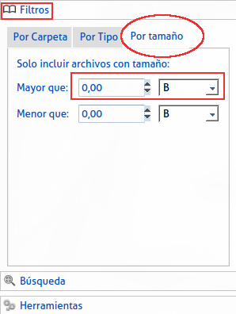
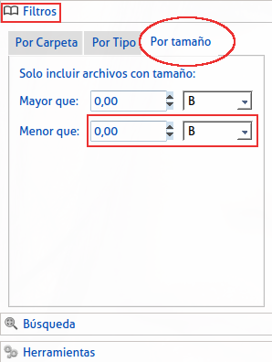

|
Se encuentra en el menú a la izquierda, en la opción "filtros", escogemos "Por Tamaño" Aquí veremos dos campos para entrar números y seguidos de estos un select para seleccionar la unidad de tamaño, en la primera especificamos que deseamos realizar nuestra búsqueda para archivos de mayor tamaño que el número pasado en este campo en la escala escogida, importante saber que, 1024b= 1kb, 1024kb=1mb, 1024mb=1gb |
|  |
|
En la segunda entrada especificamos que deseamos realizar nuestra búsqueda para archivos de menor tamaño que el numero pasado en este campo en la escala escogida, importante saber que, 1024b= 1kb, 1024kb=1mb, 1024mb=1gb. |
|  |
|
Si entramos valores en ambos campos la búsqueda se realizara en archivos con tamaño que entren en el rango escogido. |